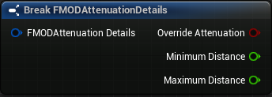
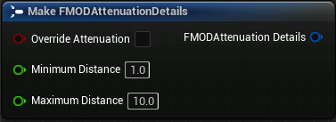
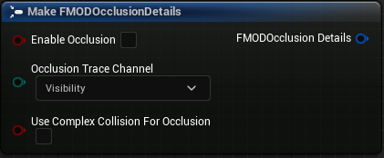

Unreal Integration 2.02
Automatically generated methods for working with FMOD and Unreal Structs.
Methods
Adds a node that breaks an 'FMODAttenuationDetails` into its member fields.

FMODAttenuationDetails BreakFMODAttenuationDetails(
FMODAttenuation Details
);
Adds a node that breaks an 'FMODOcclusionDetails' into its member fields.
FMODOcclusionDetails BreakFMODOcclusionDetails(
FMODOcclusion Details
)
Adds a node that creates an 'FMODAttenuationDetails' from its members.

FMODAttenuationDetails MakeFMODAttenuationDetails(
bool OverrideAttenuation,
float MinimumDistance,
float MaximumDistance
);
OverrideAttenuation is true.OverrideAttenuation is true.See Also: FMODAttenuationDetails.
Adds a node that creates an 'FMODEventInstance' from its members.
FMODEventInstance MakeFMODEventInstance();
See Also: Event Instance.
Adds a node that creates an 'FMODOcclusionDetails' from its members.

FMODAttenuationDetails MakeFMODAttenuationDetails(
bool EnableOcclusion,
enum OcclusionTraceChannel,
bool UseComplexCollisionForOcclusion
);
See Also: FMODOcclusionDetails.